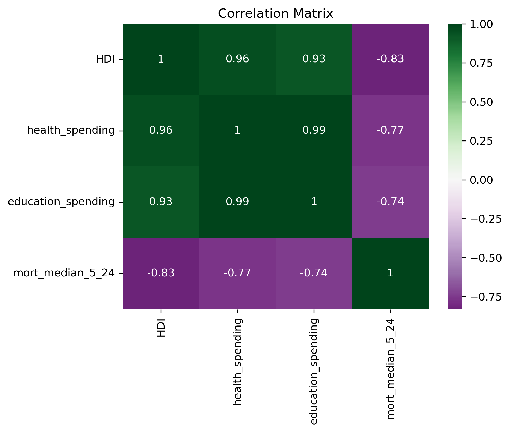
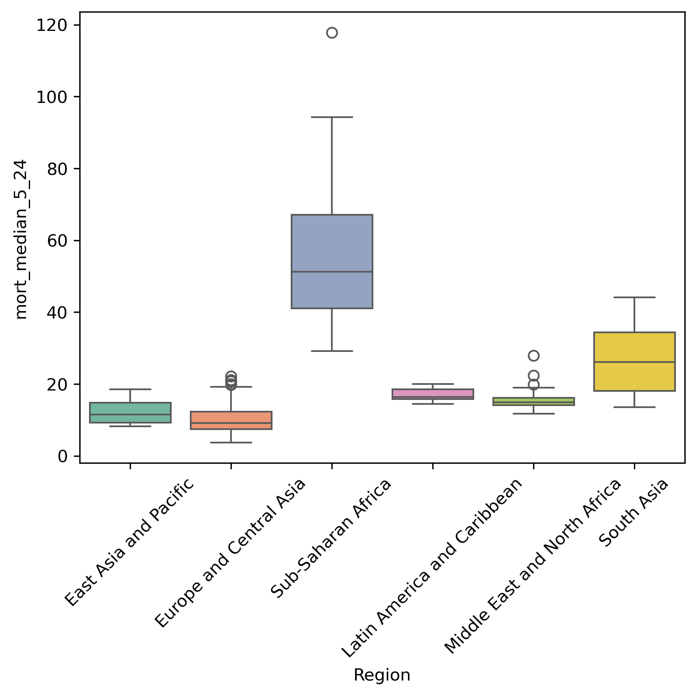
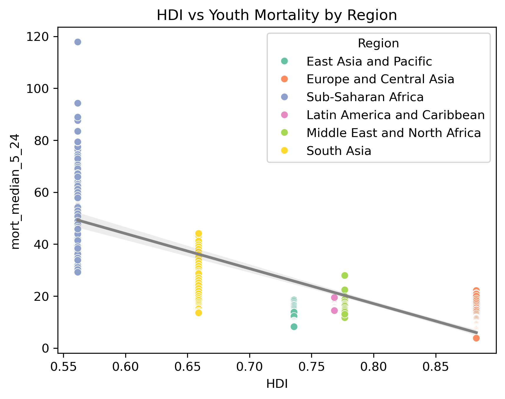
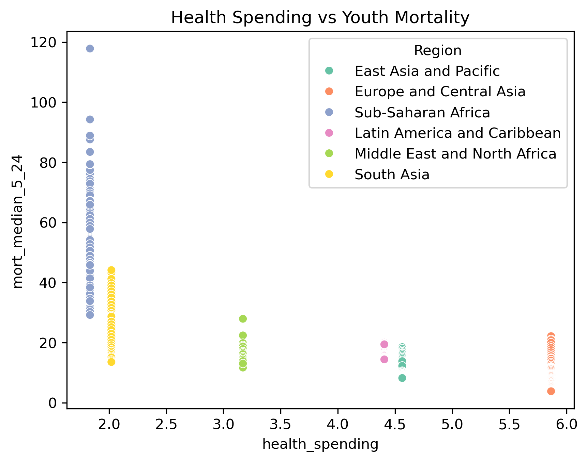
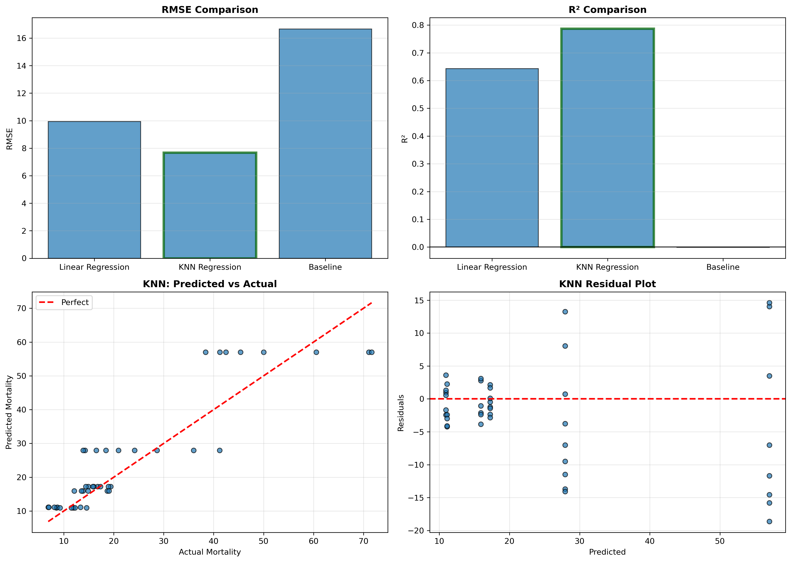
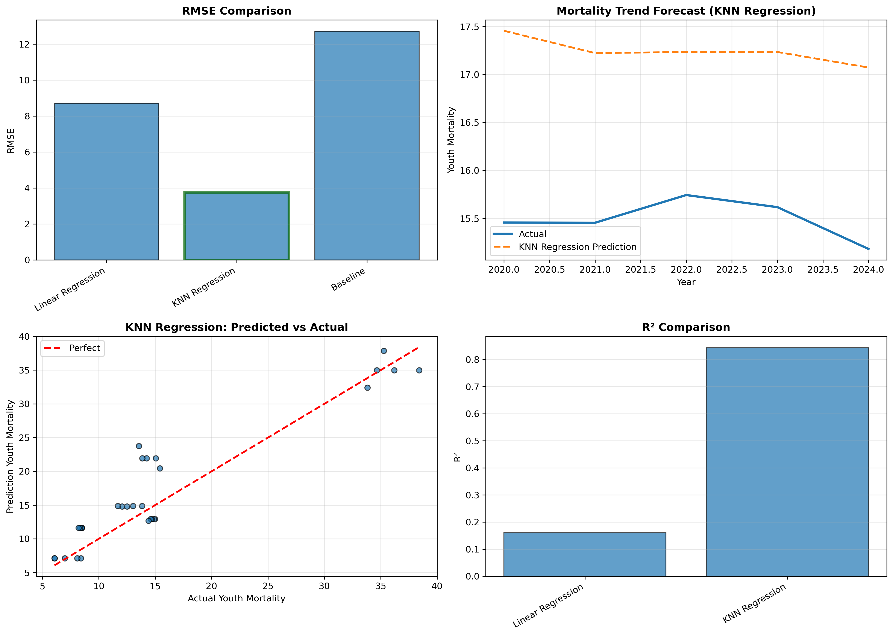

Exploring how development indicators affect youth mortality using statistics and machine learning
This project investigates why some regions experience higher youth mortality rates among ages 5–24 and whether these patterns can be predicted using data.
The analysis combines UNICEF youth mortality data, HDI indicators, health spending, education spending, and regional classifications.
The EDA shows that development indicators are strongly related to youth mortality. In general, higher development is associated with lower mortality.
The correlation matrix reveals strong relationships between development indicators and youth mortality. HDI, health spending, and education spending are all strongly positively correlated with each other, while showing strong negative correlations with youth mortality.

This suggests that regions with higher development and greater investments in health and education generally experience lower youth mortality rates. However, the very high correlations between predictors also indicate a potential multicollinearity problem, meaning these variables may overlap in explaining mortality outcomes.

The boxplot shows clear regional differences in youth mortality. Sub-Saharan Africa has the highest mortality levels and the largest variability, while Europe and Central Asia have lower and more stable mortality rates. This suggests that geographic and structural regional factors strongly influence mortality outcomes.

The scatterplot shows a strong negative relationship between HDI and youth mortality. Regions with higher HDI generally experience lower mortality rates. Sub-Saharan Africa stands out with both lower HDI and significantly higher mortality levels. This suggests that development level is strongly associated with health outcomes.

The graph indicates that higher health spending is generally associated with lower youth mortality. However, mortality differences still exist between regions with similar spending levels, suggesting that structural and regional factors also play an important role.
A key finding is that HDI, health spending, and education spending are highly correlated with each other. This creates a multicollinearity issue, meaning that it becomes difficult to isolate the independent effect of each variable.
Regression was used to understand the relationship between development indicators, region, and youth mortality.
This suggests that youth mortality is not explained by development alone. Regional and structural differences also matter.
Regression models were used to predict youth mortality from development indicators.
The best performing model was KNN Regression, achieving the lowest RMSE and highest R².

This dashboard compares the performance of different machine learning models used to predict youth mortality. KNN Regression achieved the best overall performance with the lowest RMSE and the highest R² score, indicating that it captures non-linear relationships more effectively than Linear Regression. The residual plot also shows that prediction errors are generally centered around zero, although larger errors still appear for extreme mortality values.
A time-based evaluation was also conducted by training models on earlier years and testing them on more recent years.
The dashboard below summarizes forecasting performance and compares prediction quality across models.

The model captures general mortality trends, but year-to-year fluctuations are harder to predict.
Main Insight: The models successfully capture long-term mortality patterns, but short-term fluctuations remain difficult to predict accurately.
The full notebooks, datasets, code, and project documentation are available in the GitHub repository.
View GitHub Repository